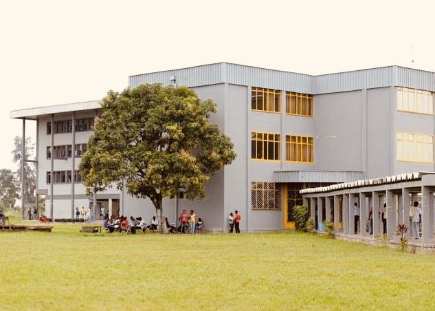

Service médical
Infirmerie universitaire : +243 810 111 222
Contacts utiles
En cas de doute, de fatigue importante ou de situation urgente, contacte un service compétent ou une personne de confiance.
Retour à l'accueil
Garde les bons contacts accessibles et visibles.
Services
Tu peux remplacer ces informations par celles de ton université ou de ton établissement.
Infirmerie universitaire : +243 810 111 222
Numéro d'urgence : 112
Cellule d'écoute : +243 820 333 444
contact@1stsanteplus.edu
Instagram : @1stsanteplus | Facebook : 1st Santé+ | X : @1stSantePlus
# Contact
# Campus # Care
# Care